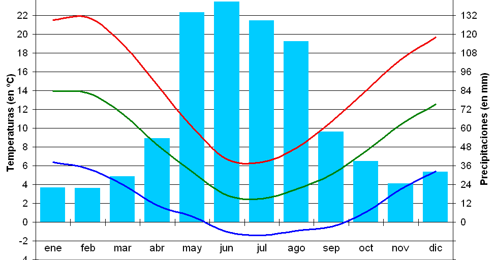
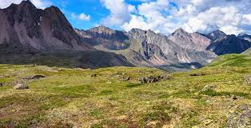
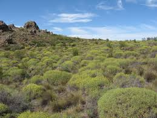

Los diagramas climáticos de meteoblue se basan en 30 años de simulaciones de modelos meteorológicos por hora y están disponibles para cualquier lugar de la Tierra. Le dan una buena indicación de los patrones climáticos típicos y condiciones previstas (temperatura, precipitación, radiación solar y viento). Los datos meteorológicos simulados tienen una resolución espacial de unos 30 km y pueden no reproducir todos los efectos del clima local, como las tormentas, vientos locales o tornados.
Usted puede explorar el clima para cualquier lugar como la selva amazónica, sabana de África Occidental, el Desierto del Sahara, la tundra de Siberia o el Himalaya.

Cielo nublado, sol y días de precipitación

La lejanía de grandes cuerpos de agua hace de las estepas regiones secas, templadas, a veces con precipitaciones inferiores a los 250mm anuales. Sus climas son extremos y de latitudes medias, caracterizados por mucha variación térmica entre el día y la noche, y entre verano e invierno (mucho calor y mucho frío respectivamente).
Estepa asiática
"Águila de la estepa"
Estas estepas están asociadas con un clima continental semiárido caracterizado por veranos calurosos e inviernos fríos y secos.
Debido a las duras condiciones climáticas, las estepas están habitadas por una escasa variedad de especies animales, manadas de herbívoros como los caballos. También hay una gran variedad de roedores y aves corredoras; suelen migrar en busca de agua. Entre los animales adaptados a este tipo de bioma están los siguientes: águila de las estepas, antílope saiga, avutarda, caballo de Przewalski, grulla damisela, marmota bobac, la rata topo Spalax menor y la tortuga rusa (Testudo horsfieldii).
La vegetación de esta zona es de tipo xerófila, es decir, plantas adaptadas a la escasez de agua, con raíces profundas. Entre las plantas están las siguientes: ajenjo negro, espiguilla azul, gagea, hierba crestada, juncia, ranúnculo
Estepa norteamericana
Bisonte Americano
En Norteamérica, grandes llanuras se estrechan desde el sur de Canadá hasta el norte de México, en los estados estadounidenses de Colorado, Kansas, Montana, Nebraska, Nuevo México, Dakota del Norte, Oklahoma, Dakota del Sur, Texas y Wyoming, es un tipo de estepa que se caracteriza por su clima menos severo que las estepas asiáticas.
La estepa norteamericana está habitada por perritos de la pradera, bisontes americanos y otros.
La vegetación de la estepa norteamericana está dominada por praderas y pasto que crece a baja altura.
Estepa norteamericana

En Europa, algunas regiones alrededor del mar Mediterráneo tienen un clima y vegetación similar a la de otras estepas, como en Sicilia (Italia), Zaragoza o Almería (España). La región pampeana en Argentina, así como la pampa magallánica y el Norte Chico en Chile, también tienen un clima similar al de una estepa.